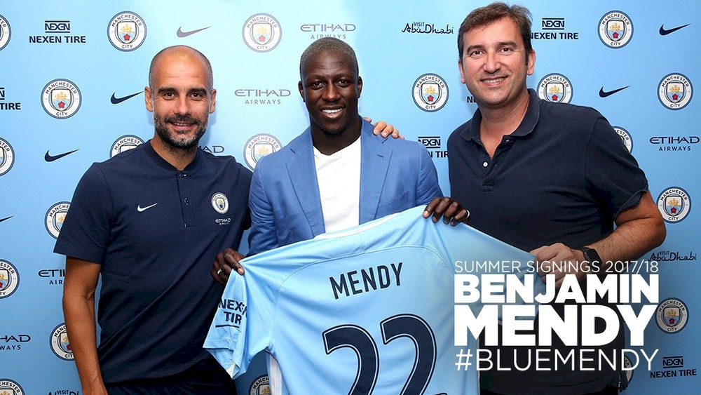

Após nove vitórias, Brasil de Tite mira recorde da Argentina nas eliminatórias
Em grande fase e no primeiro lugar do ranking da Fifa, o Brasil de Tite empilha recordes. Já são nove vitórias seguidas, algo que uma seleção sul-americana nunca tinha alcançado nas eliminatórias. A campanha com 36 pontos ganhos, aliás, é a melhor da Seleção na história do atual formato da competição. O próximo passo é superar o recorde da Argentina.
Brasil de Tite pode superar o recorde da Argentina em 2002. Para isso, precisa vencer os três jogos que lhe restam nas eliminatórias (Foto: Lucas Figueiredo/CBF)
Os hermanos são donos da maior pontuação em uma mesma edição das eliminatórias. Na luta por uma vaga na Copa de 2002, a Argentina terminou em primeiro lugar com 43 pontos em 18 jogos. Para bater a marca, o Brasil de Tite precisa vencer os três jogos que lhe restam: Colômbia, em Barranquila, Bolívia, em La Paz, e Chile, em São Paulo. Assim, chegaria a 45 pontos.
- A gente não imaginava isso no começo. Hoje podemos olhar para trás e ver o trabalho que foi feito. A partir do momento que conseguimos a classificação, temos que buscar novos objetivos. Apenas estar na Seleção já é uma motivação. Mas temos que pensar em aproveitar oportunidades, buscando vitórias e recordes que possam nos empurar ainda mais para a frente - frisou o zagueiro Marquinhos, titular em todas as nove vitórias seguidas nas eliminatórias.
Após dois treinos em Manaus, a Seleção embarcou para Barranquilla na noite de domingo. O treino de segunda-feira será já no palco do jogo, o Estádio Metropolitano Roberto Meléndez. Na terça, Brasil e Colômbia se enfrentam às 17h30 (de Brasília), pela 16ª rodada das eliminatórias.
Veja as informações da Seleção para o jogo contra a Colômbia:
Local: Estádio Metropolitano Roberto Meléndez, em Barranquilla.
Data e horário: terça-feira, às 17h30 (de Brasília).
Provável escalação: Alisson, Daniel Alves, Marquinhos, Thiago Silva e Filipe Luis; Fernandinho (Casemiro); Paulinho, Renato Augusto, Willian e Neymar; Roberto Firmino (Gabriel Jesus).
Pendurados: Miranda, Filipe Luís, Casemiro, Fernandinho, Giuliano, Renato Augusto, Neymar e Gabriel Jesus.
Arbitragem: Jesus Valenzuela apita, auxiliado por Carlos Lopez e Jorge Urrego. O trio é da Venezuela.
Transmissão: TV Globo (com Galvão Bueno, Casagrande, Júnior, Arnaldo Cézar Coelho, Tino Marcos e Mauro Naves), SporTV (com Luiz Carlos Júnior, Muricy Ramalho, Lédio Carmona e André Hernan) e GloboEsporte.com.
Tempo Real: GloboEsporte.com, a partir das 16h.
Fair Play Financeiro: La Liga pede, mas Uefa nega investigação sobre o City
A entidade que regula o Campeonato Espanhol confirmou que entrou com um pedido junto à Uefa para que investigue Paris Saint-Germain e Manchester City por quebrarem as regras do Fair Play Financeiro. Segundo o comunicado enviado pelo presidente da La Liga, Javier Tebas, à agência AP, os gigantes de Inglaterra e França estariam se beneficiando de auxílios estatais em seus investimentos milionários. Nas palavras dele, isso “distorce as competições europeias” e “causa danos irreparáveis à indústria do futebol”. A Uefa abriu inquérito sobre o PSG, mas se recusou a investigar o City.
Diante dos recentes investimentos de PSG e City, os maiores gastadores da última janela, Tebas escreveu à Uefa há duas semanas, pedindo que os dois clubes fossem investigados. Na sexta-feira, a entidade que regula o futebol europeu abriu uma investigação formal sobre o Paris Saint-Germain como parte do monitoramento dos clubes em relação ao Fair Play Financeiro. A entidade avaliará se o clube respeitou as regras de equilíbrio especialmente no recém encerrado mercado de transferências.

Ao custo de €57 milhões, Mendy foi a contratação mais cara do Manchester City nesta janela (Foto: Divulgação)
De acordo com veículos de imprensa britânicos, como a "BBC" e o "Daily Mail", a Uefa informou que o Manchester City não está sob investigação.
- Não há investigação sobre o Manchester City com relação ao regulamento do Fair Play Financeiro. Qualquer notícia sobre a tal investigação é insustentada - disse em comunicado.
O regulamento foi aprovado pela entidade europeia em 2010 e entrou em funcionamento efetivamente em 2011. Ele visa melhorar a saúde financeira dos clubes do continente e, basicamente, tem como meta equilibrar os gastos. Ou seja: os times não podem gastar mais do que arrecadam. No entanto, em 2015, o texto foi atualizado e incluiu itens de controle de investimentos. O próprio PSG, o Manchester City e o Chelsea, financiado com bilhões por seus donos, inspiraram a mudança.
No dia derradeiro da janela, o PSG contratou por empréstimo o atacante Mbappé, revelação do Monaco, com opção de compra em € 180 milhões (R$ 667,8 milhões na cotação atual) para justamente tentar burlar o FFP. No início de agosto, o clube já havia gastado € 222 milhões em Neymar, no que virou a transação mais cara da história. Já o City investiu milhões pelas contratações de Ederson, Danilo, Benjamin Mendy, Bernardo Silva e Kyle Walker.
Quais são as principais regras do Fair Play Financeiro?
São três princípios básicos:
Sem calote: os clubes que se qualificam para as competições da Uefa têm de provar que não têm dívidas em atraso com outros clubes (transferências, etc), salários de jogadores, previdência social e autoridades fiscais.
Controle de gastos: o clube não pode gastar € 5 milhões além do que arrecada por período de avaliação, que é de três anos. No caso de clubes cujos donos tenham patrimônio como garantia para fazer o pagamento, o valor pode chegar a € 30 milhões para o triênio 2015 a 2018. As despesas com estádios, centros de treino e aposta na formação de jovens e no futebol feminino não entram na conta.
Investimento "sustentável": em 2015, a Uefa atualizou o regulamento para ter um maior controle sobre os gastos excessivos. É o principal item no qual o PSG se encaixaria. A entidade monitora clubes que tenham tido injeção suspeita de dinheiro, mas, ao mesmo tempo, controla aqueles times com dificuldades estruturais.
Observe esta forma de desenhar esse boneco de palito totalmente inovadora
Veja os melhores momentos de Tite pela seleção brasileira: